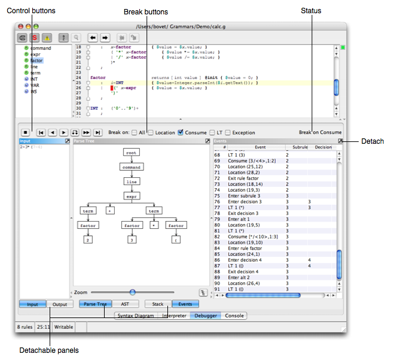

The Debugger
ANTLRWorks is able to debug any grammar using a simple language agnostic protocol even if the target language is not Java.

The various elements are:
- Control buttons: buttons used to control the debugger (e.g. stop, play forward, backward). Move the mouse over a button to have a small tooltip displayed. Note that some of these buttons allow to go back in the stream of events: this is particularly useful when you want to replay a portion of events without having to stop and relaunch the debugger (note that the actions are executed only once, during the first pass).
- Break buttons: use these buttons to tell the debugger at which event it should break.
- All: break on all events
- Location: breaks on Location events (when the parser moves in the grammar)
- Consume: breaks on Consume events (when the parser is consuming a token)
- LT: breaks on LT events (when the parser is looking ahead)
- Exception: breaks on Exceptions events
- Status: status of the debugger.
- Detachable panels: there are six panels that can be detached from the main window using the Detach button. These panels are:
- Input: shows the input tokens being consumed.
- Output: shows the output from the parser being debugged.
- Parse Tree: shows the parse tree
- AST: shows the abstract syntax tree (if generated by the grammar)
- Stack: shows the current stack of rules
- Events: shows the list of events that have been sent by the parser to the debugger
Remote Debugger
If the parser runs on another machine or has been generated in another language than Java, use the remote debugging feature of ANTLRWorks to connect to it.